Nyzo version 611 (commit on GitHub) adds further improvements and tests for the CycleDigest class.
This version does not affect any run modes. It contains foundational work for future functional changes.
This version further develops the CycleDigest class that was introduced in version 596 and previously updated in versions 598 and 610. This version adds a flag to indicate whether a CycleDigest has enough history to validate all proof-of-diversity rules, and it reduces the block history required to calculate a CycleDigest by a full cycle. Testing is also expanded.
In CycleDigest, the constant requiredCyclesForCompleteness was added. Cycle digests need four full cycles to allow the proof-of-diversity rules to be evaluated.
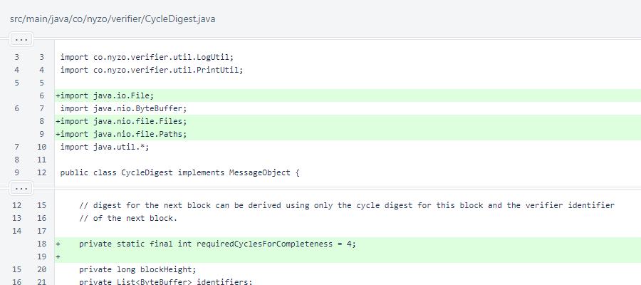A new complete field was added to indicate whether the object has the full information required of a CycleDigest. Ultimately, we would like to perform another blockchain update that stores the hash of the digest at the frozen edge, which would ensure that a complete CycleDigest is always available at the frozen edge, eliminating the need for this flag.
The CycleDigest constructor is now public instead of private. Currently, CycleDigestTest is the only other class creating CycleDigest objects, but plans are in place for a CycleDigestManager class that will likely also need to create instances of CycleDigest.
The calculateCycleStartIndices() method changed to calculateCycleStartIndicesAndCompleteness(). This method and the calculateCycleLengths() method now both return void, and the calculated values are stored in the object fields within these methods.
Instead of using the array length when removing excess identifiers, the requiredCyclesForCompleteness constant is now used to improve readability.
To avoid spamming the console, the newVerifierStates are no longer printed within the constructor, and the continuity state now considers the new complete flag.
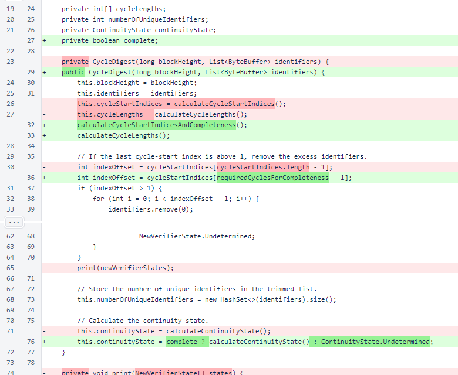The print() method no longer accepts the new-verifier states as an argument, instead using the fields available to the instance method. The old method of printing cycles is used for digests with up to 20 heights.
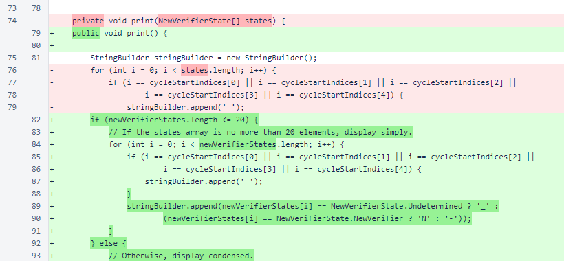A condensed version is now displayed for digests handling longer cycles.
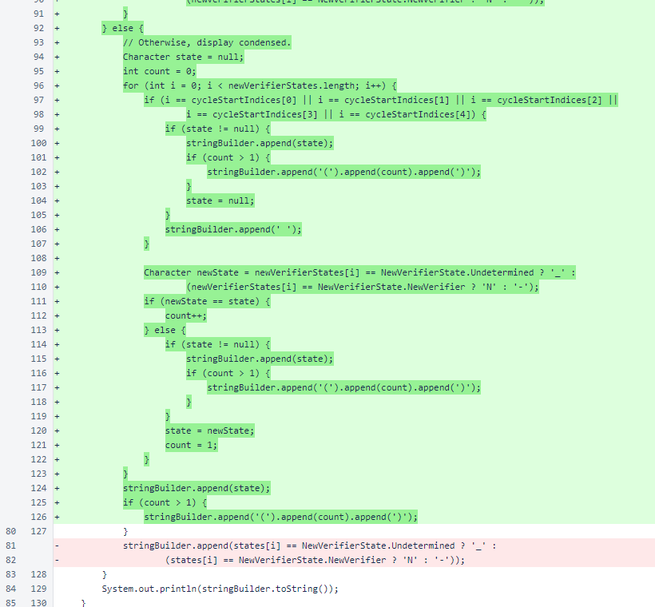A convenience method of isNewVerifier() was added for parity with the CycleInformation class.

A suggestedBlockHeight is now passed to the digestForNextBlock() method. This is used to allow a CycleDigest to be built starting an any height, without the onerous requirement of starting at the Genesis block.
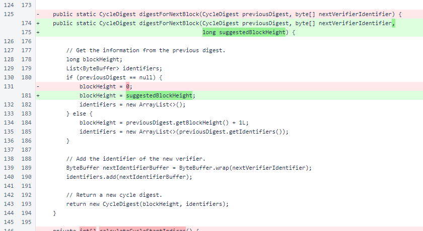The renamed calculateCycleStartIndicesAndCompleteness() method now uses the requiredCyclesForCompletness constant to define the cycleStartIndices array length. This array is now one element shorter than it was previously. Results are stored in the appropriate object fields, and the cycle count and completeness are displayed for debugging purposes.

In the calculateCycleLengths() method, the cycleLengths array is now the same size as the cycleStartIndices array. The cycleLengths array did not change size. This is an adjustment due to the removal of an unnecessary element from the cycleStartIndices array.
A reference to the cycleLengths array is now stored in the class field in this method instead of being returned. This follows the design of the calculateCycleStartIndicesAndCompleteness method.
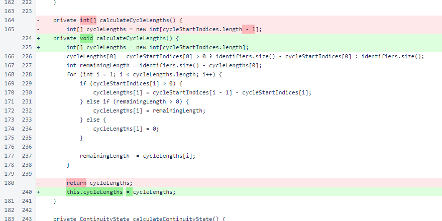The isComplete() accessor method was added.
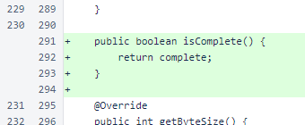A method for reading a CycleDigest from a file was added. To support this method, the fileForHeight() method standardizes locations of CycleDigest files.
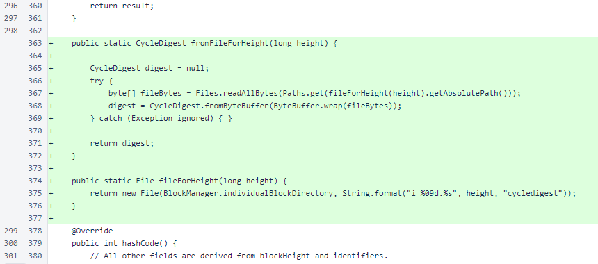The CycleDigest.toString() method now includes the completeness and length of the identifier list.
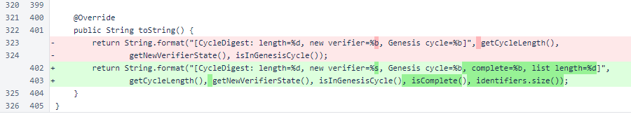At the beginning of CycleDigestTest.main(), the testHardCoded() method is now invoked.
The block height is now passed to the digestForNextBlock() method, although the value is redundant and unused when the cycle digest provided to the method is non-null.
Finally, completeness is checked on all digests created from the block files.
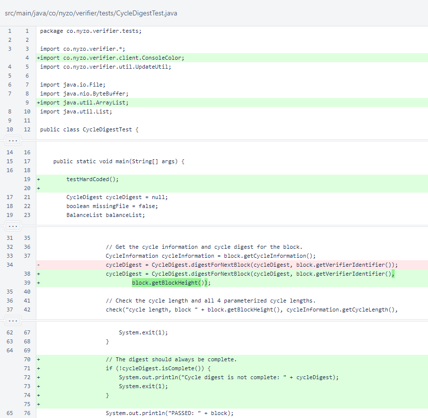The CycleDigestTest.testHardCoded() method checks some simple digests to examine specific behaviors of the CycleDigest class that might not be captured in real scenarios on the Nyzo blockchain.
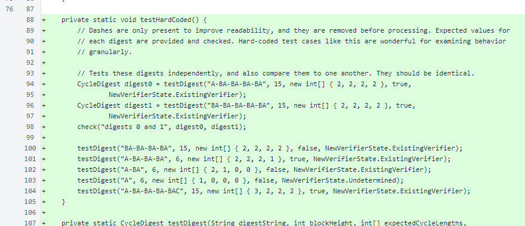The CycleDigestTest.testDigest() method checks a single digest produced from a character string. Each character in a string represents a verifier identifier, and all of the expected parameters of the cycle digest are specified and checked against computed parameters.
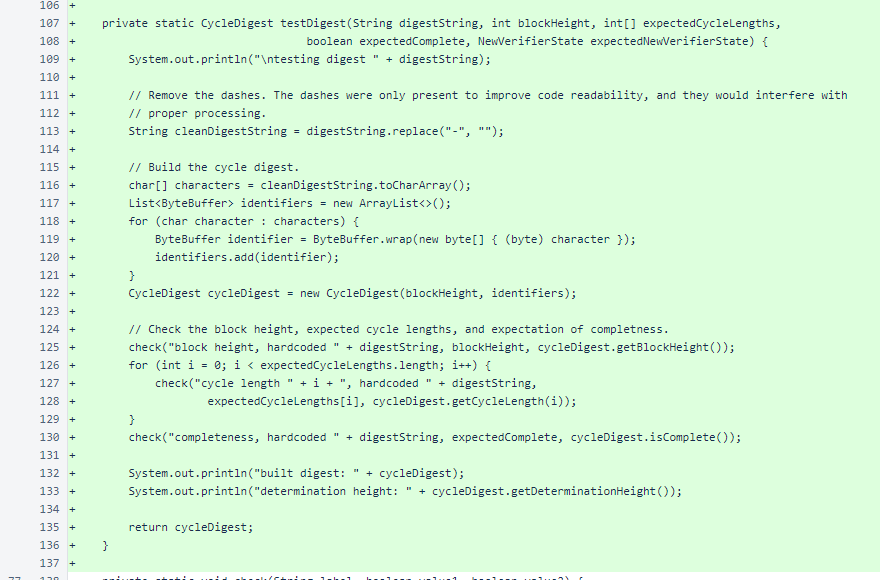The CycleDigestTest.check() methods now have color coding to provide more obvious feedback on failed tests. An overload for comparing two Objects was added.
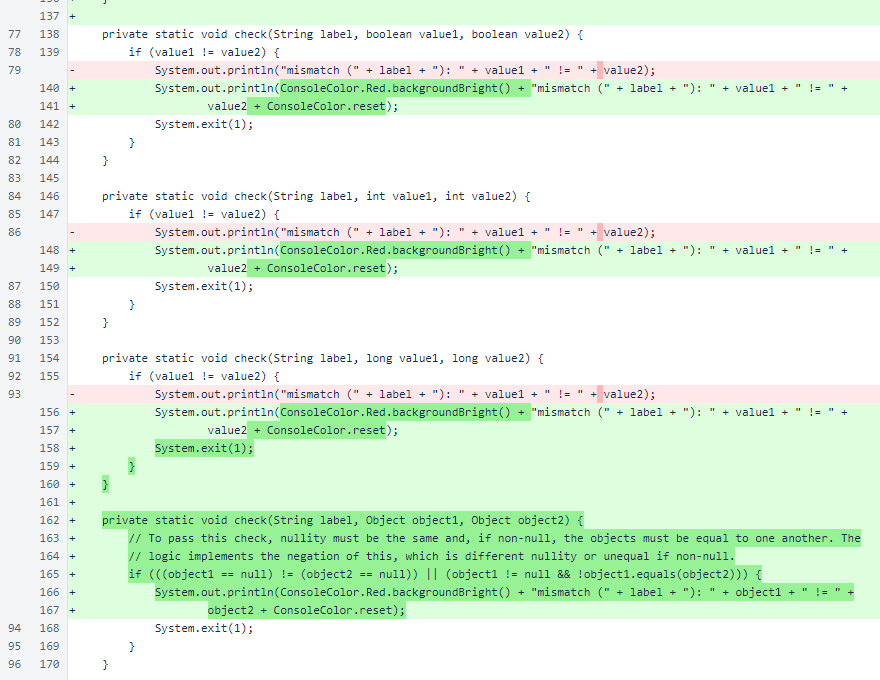